Modelling long-range atmospheric transport of crop diseases
Some of the greatest challenges to food production in low- and middle-income countries arise when crops are devastated by the sudden outbreak of destructive migratory insects and diseases. Pests and pathogenic spores can be channelled by air streams over long distances, crossing international boundaries and continents, bringing severe consequences for crop production and livelihoods in previously uninfected geographical areas.
Forecasting risks of invasion at continental scale, requires simulation models and visualization tools for estimating pest dispersal, range and intensity (spore or insect load), to forewarn national plant health agencies and enable contingency plans to be implemented in advance. The challenge is the quantity of data that are involved for interpretation and visualization of spatiotemporal dynamics of atmospheric transport of crop pathogens and insect pests, requiring tools that are capable of processing the data in a reasonable time, so that pest and disease warnings can be rapidly disseminated to regional plant health authorities, government agencies and extension services, in countries at risk.
Our team has explored how 3-D visualization technologies can link time-dependant meteorological data to atmospheric transport models to produce 3-D visual representations of pest and disease movements at regional and continental scales.
Cassava Responsive
Location: Sub-Saharan Africa
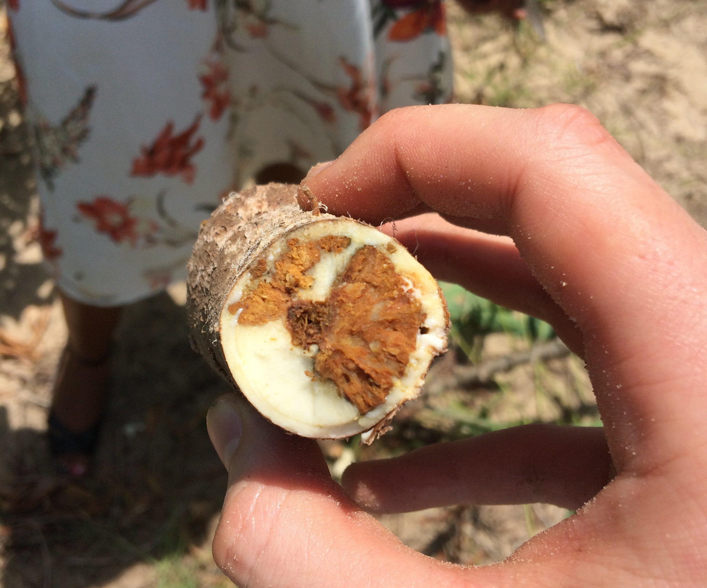
In 2004, Cassava brown streak disease (CBSD) was observed near Kampala, Uganda. Since 2004, it has spread widely throughout previously uninfected regions and threatens production in Central and West Africa.
Our research focusses on predicting future spread and optimal management strategies to counteract spread in endemic and currently uninfected regions.
Project members
- Dr Rich Stutt
- Alex Ferris
- Professor Chris Gilligan
Wheat Rust Early Warning System
Location: Asia & East africa

A daily, near real-time week long forecast of the spread of stem (Puccinia graminis), stripe (Puccinia striiformis), and leaf (Puccinia triticina). Read more.
Wheat rust diseases are caused by airborne fungal spores and pose a major threat to food security all over the globe, especially in countries in East Africa and South Asia. New emerging strains of the disease present an intensifying risk of severe crop loss.
As a result of the relentless efforts of many collaborating organisations (University of Cambridge, Met Office, CIMMYT, EIAR and ATA), an Early Warning System has been established to provide a daily near-real time weeklong forecast of the spread of stem (Puccinia graminis), stripe (Puccinia striiformis), and leaf (Puccinia triticina) rust in Ethiopia. The system has recently been extended to include Kenya in East Africa and Nepal and Bangladesh in South Asia (the latter in collaboration with CIMMYT-Bangladesh, NARC, BWMRI, DHM, DAE, and EMBRAPA).
Here is the schematic summary of the EWS components (see further details in Allen-Sader et al. 2019):
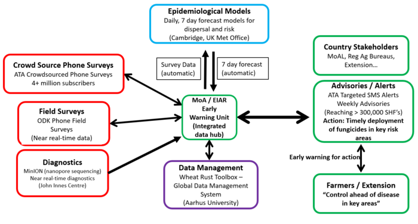
The modelling involves a combination of meteorological and epidemiological models with additional inputs from in-country surveillance coordinated by CIMMYT. The team in Cambridge is responsible for the development and maintenance of the modelling elements of the EWS, including the adaptation of a particle dispersal model (NAME) originally developed by the UK Met Office for rust spores. The UK Met Office also provides seven-day weather forecasts for the target countries to drive the models, giving farmers a three-week window to apply fungicides to prevent rust epidemics. The models are also being used pre-season to assess risks from new races of wheat rust and to inform the selection of crop varieties likely to confer resistance.
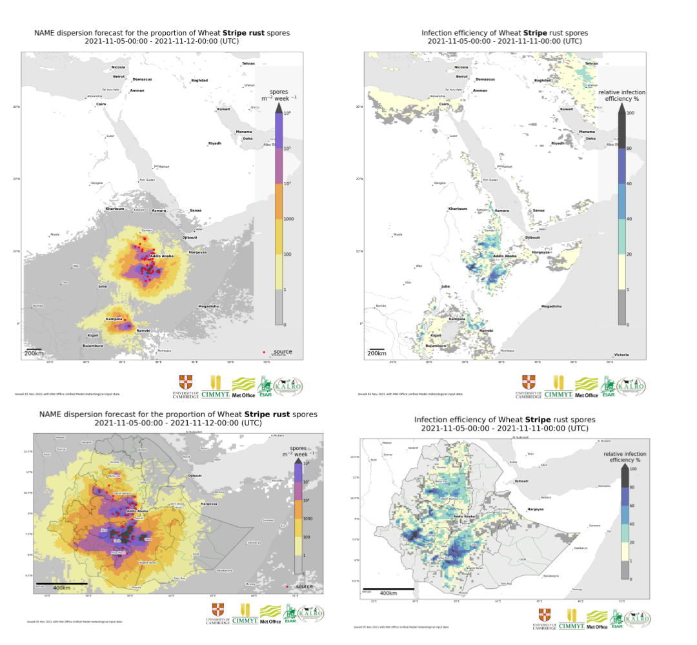 Example deposition (left column) and environmental suitability (right column) outputs of the model for the East Africa domain (upper row) and for the Ethiopia subdomain (lower row). Movie below includes the Epidemiological Model outputs for the Ethiopia subdomain.
Recent publications and presentations:
Prof. Chris Gilligan’s presentation from the BGRI-2021 Workshop:
Dr. Tamas Mona’s presentation from the BGRI-2021 Workshop:
Project members
- Dr Jake Smith
- Dr Tamas Mona
- Lawrence Bower
- Dr Rich Stutt
Funders:
This work is funded by The Bill and Melinda Gates Foundation and UK Foreign, Commonwealth & Development Office for East African part of the project and by the UK Foreign, Commonwealth & Development Office for South Asian, as part of the umbrella project: Asia Regional Resilience to a Changing Climate (ARRCC)).
Locust Responsive
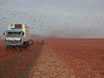 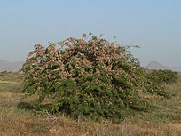 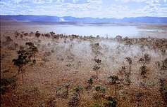
Our research shows that integrated aerobiological epidemiology modelling systems are advantageous for explaining how weather events facilitate relocation of desert locust movement between Yemen over the Gulf of Aden and the East African continent.
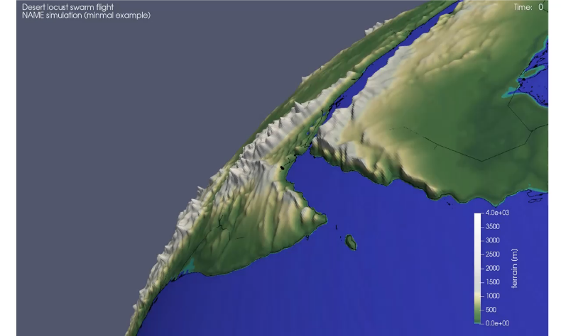
Take a look at the articles:
Meyer M., Thurston W., Smith J.W., Schumacher A., Millington S.C., Hodson D.P., Cressman K. and Gilligan C.A. (2023), Three-Dimensional Visualization of Long-Range Atmospheric Transport of Crop Pathogens and Insect Pests. Atmosphere, 14, 910. https://doi.org/10.3390/atmos14060910
Retkute, R.; Hinton, R.G.K.; Cressman, K.; Gilligan, C.A. Regional Differences in Control Operations during the 2019–2021 Desert Locust Upsurge. Agronomy 2021, 11, 2529. https://doi.org/10.3390/agronomy11122529
Key Team members
- Dr Renata Redkute
- Dr Jacob Smith
Banana Bunchy Top Disease (BBTD) Responsive
Location: Benin, Nigeria, Australia
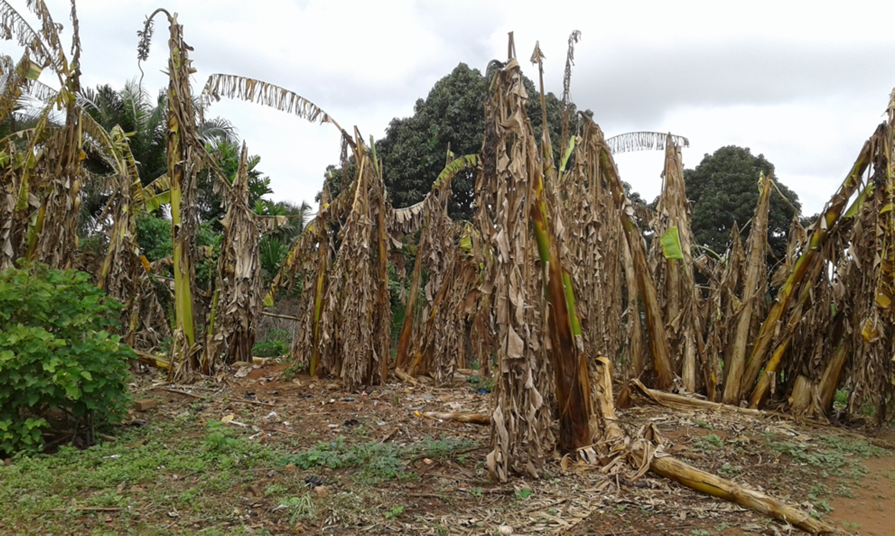
Research focus: Potential of clean-seed programs for re-establishing banana production in disease endemic areas
Investigation of clean-seed program for re-establishing production in disease endemic areas
Despite the increasing use of the dissemination of disease-free planting material, it remains unclear how to optimise the potential of of clean-seed program for re-establishing production in disease endemic areas
Bananas are reintroduced by successively planting banana suckers in 0.5ha fields. Smallholder farmers have sourced clean seed material, which is 100% virus free, to start growing the initial field. All plants produce new suckers from the field are planted to replenish initial field or to expand production into new fields.
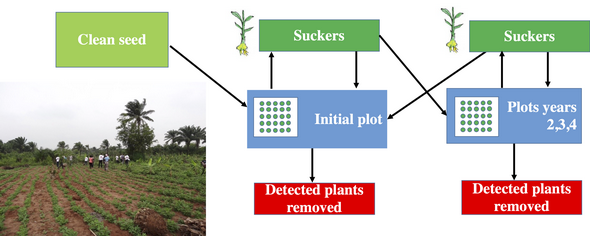
Sustainable strategy
Running generated simulations we can provide evidence that introducing virus-free material in areas affected by BBTV along with propagation of suckers combined with plant inspection for infection and removal of infected plants can provide a sustainable strategy for disease management.

Models were validated using field data from Omondi et al. 2020, Plant Pathology, 69, 1754.
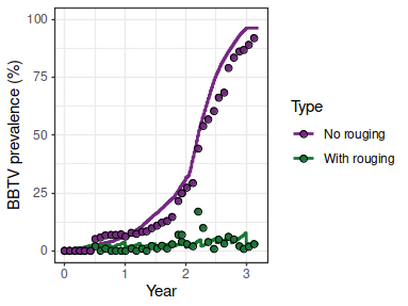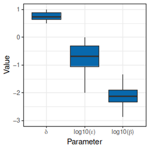
The benefits
This model could be adapted to be used for other hosts and pathogens.
We are able to include additional management options (continuous provision of clean-seed, pesticide treatment) into the model which increases model robustness and accuracy for determining the benefits of introducing clean seed programmes under different farming systems.
Project members
- Dr Renata Retkute
- Professor Chris Gilligan
Partners
- University of Queensland, Brisbane, Australia
- CGIAR Bioversity International, Cotonou, Benin
- National Horticultural Research Institute (NIHOR), Nigeria
- Universitate Nationale d'Agriculture (UNA), Benin